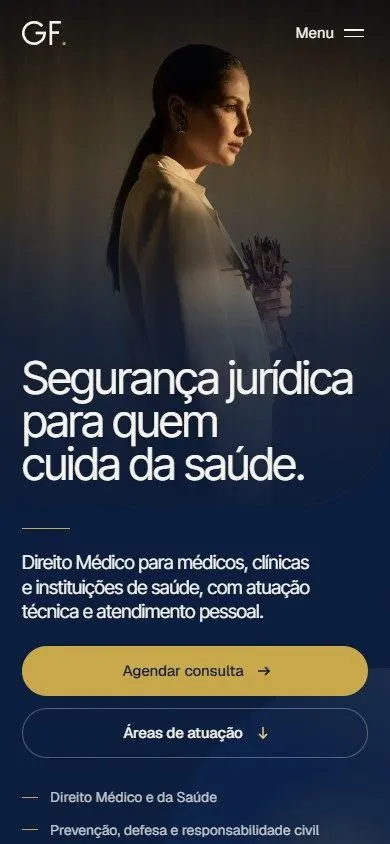
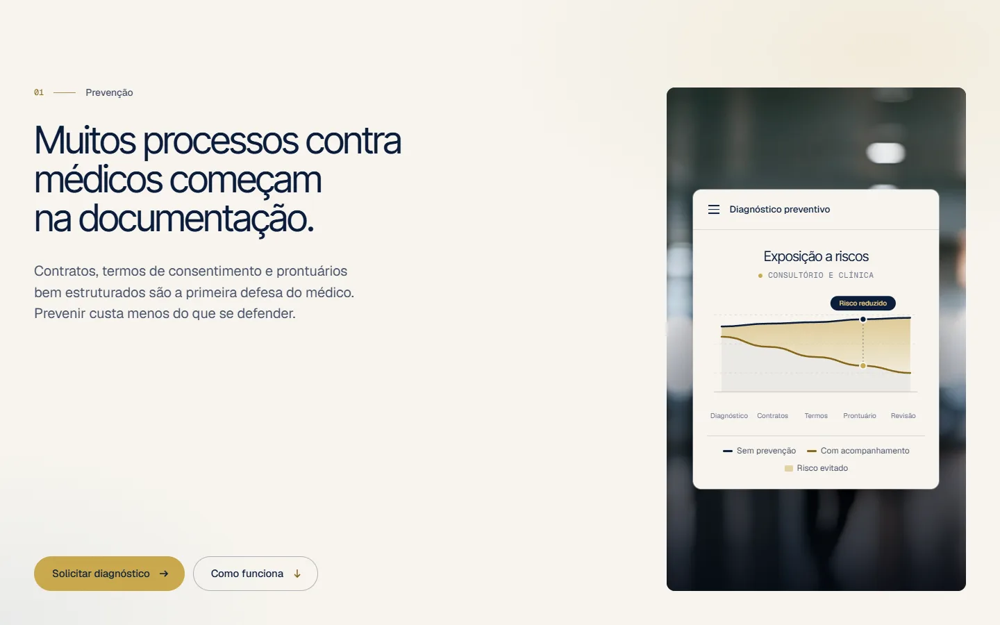
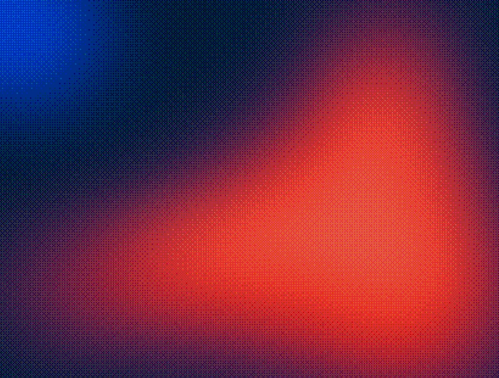

Advocacia para quem cuida da saúde.
Gabriel Filemon atende médicos, clínicas e hospitais, e também cuida de casos cíveis, de família, tributários e trabalhistas. O site precisava deixar claro em segundos que a especialidade é Direito Médico, sem esconder o resto, e passar a confiança que um médico espera antes de entregar um problema sério a alguém.
Construímos uma página que fala a língua do consultório. Ela começa pelo risco que todo médico conhece, mostra como o escritório atua em cada frente e termina num contato simples, com o assunto já escolhido.
Uma marca discreta, assinada em dourado.
O monograma junta G e F num único traço geométrico, como uma assinatura, e fecha com um ponto dourado. Azul-marinho e papel dão a sobriedade de um escritório. O dourado aparece pouco, só onde precisa chamar atenção.
Gabriel Filemon Advocacia atua em Direito Médico para médicos, clínicas e instituições de saúde, com atendimento pessoal do primeiro contato à conclusão do caso.
A identidade parte de um monograma geométrico: G e F no mesmo traço, fechados por um ponto dourado. Paleta e fontes foram escolhidas para soar técnicas e próximas ao mesmo tempo.
CMYK 81 53 0 77
#0B1C3B
CMYK 0 1 4 3
#F7F4EE
CMYK 0 16 62 21
#C9A84C
Notificação do CRM
Sindicâncias pedem resposta técnica e no prazo.
Processo por erro médico
Análise do prontuário, da conduta e da perícia.
Abertura de clínica
Contratos organizados desde o início.

FOTOGRAFIA E APLICAÇÃOUma página que conduz do risco ao contato.
Cada seção responde a uma pergunta do médico, na ordem em que ela aparece: o que pode dar errado, o que o escritório faz, quando procurar ajuda, como funciona e por que confiar. Azul-marinho e papel se alternam para cada assunto ter o próprio respiro, e as animações existem só para guiar a leitura.

Feito para ser aberto entre um atendimento e outro.
A maioria dos médicos vai ver o site no celular, no intervalo da agenda. Por isso a versão mobile foi desenhada junto com a de desktop, e não adaptada depois.
- 01Hero que cabe na tela
Título, chamada e botão aparecem sem precisar rolar.
- 02Carrosséis de deslizar
Situações e diferenciais passam um card por vez, com um indicador de posição em dourado.
- 03Contato em um toque
Cada situação leva ao formulário com o assunto já preenchido.
Do primeiro rascunho ao site no ar.
- 01Posicionamento e estrutura
Sete seções em sequência, da prevenção ao contato.
- 02Logotipo
Monograma GF com versões para fundo claro, escuro e ícone.
- 03Direção de arte
Azul-marinho, papel e dourado, fotografia em tons quentes e grão.
- 04Textos
Copy escrita para médicos, com situações reais do consultório.
- 05Interface
Mockups de documentos, abas por área e cards ligados ao formulário.
- 06Versão mobile
Hero que cabe na tela e carrosséis de deslizar.
- 07Formulário de contato
Pedido de consulta com área de interesse, direto no e-mail.
- 08Publicação
Imagens otimizadas, metatags e site publicado na Vercel.

Sua marca pode ser a próxima.
Conte o que você precisa: site, reels, social media ou tudo junto. A gente responde pessoalmente.